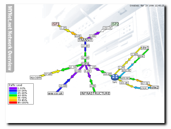

PHP Weathermap is licensed under the MIT license. See LICENSE file for complete license.
Parts of this software distribution are by other authors. Please see the README file for attribution and license details.

Sample output from php-weathermap, using data
collected by Cacti and MRTG.
Larger
version
PHP Weathermap is one of many implementations of the same basic idea - take data from your network devices and use it to provide a single-page overview of the current state of network, like the one to the right. It complements a tool like MRTG, Cricket or Cacti, that provide in-depth graphing, and historical information, and can use data from those systems to produce it's maps. In fact, it requires some other data-collection source, as it does no device-polling on it's own.
This particular version is written in PHP, and it can read statistics data from MRTG-produced HTML files, plain tab-seperated text files and from RRD files, such as those produced by newer MRTG setups, Cacti (my favourite) or another tool. It can also generate HTML 'holder' files for the map images, which can include popup overlays of historical data and links into your other monitoring/statistics system. It also has a interactive map editor, so you can largely avoid the text configuration files, if you prefer.
To get a better idea of what is possible, see the example map that comes with this manual.
Based on lessons learned with the perl version, this one has a very restricted set of dependencies
To use the Cacti plugin, you will need a recent version of Cacti, and possibly the matching Cacti Plugin Architecture, from Jimmy Conner's Cactiusers.org. From Cacti 0.8.8 onwards, the Plugin Architecture is built-in.
There are two mailing lists for php-weathermap:
Also, if you have an RSS reader, you can subscribe to the 'appcast' feed for php-weathermap which contains roughly the same content as the -announce mailing list.
How to install Weathermap depends on how you intend to use it:
Weathermap has several features that can potentially give users more access than you intended to. This section describes the risks, and possible ways to mitigate them.
First of all, there are quite a few folders in the weathermap distribution that don't need to be web-accessible. If you aren't' using the Cacti plugin, then practically all of it can be blocked or moved elsewhere. If you are using Weathermap with Cacti, then you can still deny ALL access from web users for the configs, output, lib and random-bits directories. The distribution comes with .htaccess files that will do this for you if you have Apache, and you have enabled "AllowOverride All" for the Weathermap directory (it may be on by default - you can test by trying to access http://yourserver/cacti/plugins/weathermap/lib/ - you should get a 403 Forbidden error.
Secondly, you should use additional access control (by IP or authentication) to limit who can access the editor.php and cacti-pick.php pages. The second of those will allow someone accessing the page to see a list of all the datasources in your Cacti installation. The first one allows anyone who can access it to edit your maps (logically enough). However, Weathermap includes a datasource plugin that allow someone who can change the TARGET lines in a map to potentially run any command as the Cacti poller user. As of version 0.97b, this plugin (external) is disabled by default.
Any user with access to the editor can also see all your maps. In a shared or service provider environment, this may be a Bad Thing.
There are two ways to run Weathermap.
If you are using the Cacti plugin, then it will be run for you as part of the Cacti poller cycle. You don't need to do anything special apart from add your map configuration files, as explained in the Cacti plugin notes.
If you are using weathermap as a standalone tool, you do it using the command line version. See the CLI Reference for all possible options, but a good starting point is something like:
php ./weathermap --config myconfigfile.conf --output mymap.png --htmloutput mymap.html
You can skip the htmloutput and output parts if you have HTMLOUTPUTFILE and IMAGEOUTPUTFILE lines in your configuration file.
Usually, people want to run weathermap regularly (it's not a requirement though!). To do that, you need to create a 'cron job' or 'Task Scheduler Task' to run a command-line like the one above on a regular basis. You probably already have a similar task setup to collect the data that weathermap is reading. This is the same kind of thing.
The weathermap is defined by a plain-text file which by default is called weathermap.conf (you can have many configurations, and choose between them with command-line switches). By default, weathermap will read that file, and produce a single PNG file called weathermap.png.
The configuration file has three sections: Node definitions, Link definitions and Global settings. There is an example of a complete file at the bottom of this page.
A simple NODENODE nycore1 LABEL NYC POSITION 30 30
Nodes are the points on your network that are joined together. Depending on the detail in the map, they might be cities or individual routers. In a basic map, a node has 3 pieces of information - an internal name which must be unique to this node, it's position from the top-left corner of the map, in pixels, and optionally a label, which will appear within the box marking the position of the node. Nodes without a label don't appear on the map at all, but can still be used as an endpoint for a link.
A simple LINKLINK backbone1 NODES nycore1 paix1 BANDWIDTH 3M TARGET ../my-mrtg-data/backbone1.html
Links are the network routes between the Nodes. Typically they are actual network links, but they can be anything that you can get numbers for that make sense on map.
An absolute minimal link has 3 pieces of information too. They are the unique internal name for this link, and unique node names for the two endpoints. To show current usage on the map, you'll need to give two more pieces: the maximum bandwidth on the link, and a way to get the current throughput. The BANDWIDTH is measured in bits/sec, and can include the usual K,M,G and T suffixes for large values. The data-source is given in the TARGET line, and can be one of
These settings usually live at the top of the text file, and specify basic information about the map. The minimum settings are:
WIDTH 800 HEIGHT 600
This is specifies the size of the map in pixels. If you want something a bit fancier than a plain white background, you can make up a background image to use in PNG format. In that case, the map will be the size of the background image:
BACKGROUND western-europe.png
There are also settings to set which fonts and colours are used for various elements of the map, where to position the colour-legend (if at all), what files to output, and more advanced layout techniques. The full list is in the Config Reference.
A Sample Configuration File# some initial comments... # # This sample configuration file demonstrates most of the basic features of # PHP Weathermap, along with some of the cosmetic and layout changes possible # # BACKGROUND background.png HTMLOUTPUTFILE example.html IMAGEOUTPUTFILE example.png TITLE Network Overview HTMLSTYLE overlib KEYPOS 10 400 # define some new TrueType fonts - built-in ones go from 1 to 5, so start high FONTDEFINE 100 VeraIt 8 FONTDEFINE 101 Vera 12 FONTDEFINE 102 Vera 9 KEYFONT 102 LINK DEFAULT BANDWIDTH 100M BWLABEL bits BWFONT 100 OVERLIBWIDTH 395 OVERLIBHEIGHT 153 WIDTH 4 NODE DEFAULT LABELFONT 101 NODE transit POSITION 400 180 LABEL TRANSIT # a little splash of background colour for these nodes NODE isp1 POSITION 250 100 LABEL ISP1 INFOURL http://www.isp1.com/support/lookingglass.html LABELBGCOLOR 255 224 224 NODE isp2 POSITION 550 100 LABEL ISP2 INFOURL http://www.isp2.net/portal/ LABELBGCOLOR 224 255 224 NODE core POSITION 400 300 LABEL core INFOURL https://core.mynet.net/admin/ NODE customer1 LABEL xy.com POSITION 150 370 NODE customer2 LABEL ww.co.uk POSITION 250 450 NODE infra LABEL INFRASTRUCTURE POSITION 450 450 # this node has an icon, and so we push the label to the South edge of it, so it # can still be read NODE sync LABEL Sync ICON my_router.png LABELOFFSET S LABELFONT 2 POSITION 550 370 # the icon is taken from a Nagios icon pack: # http://www.nagiosexchange.org/Image_Packs.75.0.html?&tx_netnagext_pi1[p_view]=110&tx_netnagext_pi1[page]=10%3A10 NODE site1 LABEL site1 POSITION 700 220 NODE site2 LABEL site2 POSITION 750 420 LINK sync-core NODES sync core TARGET data/sync_traffic_in_259.rrd OVERLIBGRAPH http://support.mynet.net/cacti/graph_image.php?local_graph_id=256&rra_id=0&graph_nolegend=true&graph_height=100&graph_width=300 INFOURL http://support.mynet.net/cacti/graph.php?rra_id=all&local_graph_id=256 # # Site1 has two E1s, so we use NODE-offsets to allow them to run parallel # LINK sync-site1a NODES sync:N site1:W WIDTH 3 TARGET data/sync_traffic_in_257.rrd BANDWIDTH 2M OVERLIBGRAPH http://support.mynet.net/cacti/graph_image.php?local_graph_id=254&rra_id=0&graph_nolegend=true&graph_height=100&graph_width= INFOURL http://support.mynet.net/cacti/graph.php?rra_id=all&local_graph_id=126 LINK sync-site1b NODES sync:E site1:SE WIDTH 3 OVERLIBGRAPH http://support.mynet.net/cacti/graph_image.php?local_graph_id=255&rra_id=0&graph_nolegend=true&graph_height=100&graph_width= TARGET data/sync_traffic_in_258.rrd BANDWIDTH 2M INFOURL http://support.mynet.net/cacti/graph.php?rra_id=all&local_graph_id=56 # # site2 also has two links, but this time we use the VIA to curve the links # LINK sync-site2a NODES sync site2 WIDTH 3 VIA 650 380 TARGET data/sync_traffic_in_251.rrd OVERLIBGRAPH http://support.mynet.net/cacti/graph_image.php?local_graph_id=248&rra_id=0&graph_nolegend=true&graph_height=100&graph_width=300 BANDWIDTH 1M INFOURL http://support.mynet.net/cacti/graph.php?rra_id=all&local_graph_id=252 LINK sync-site2b NODES sync site2 WIDTH 3 VIA 650 420 TARGET data/sync_traffic_in_252.rrd OVERLIBGRAPH http://support.mynet.net/cacti/graph_image.php?local_graph_id=228&rra_id=0&graph_nolegend=true&graph_height=100&graph_width=300 BANDWIDTH 1M INFOURL http://support.mynet.net/cacti/graph.php?rra_id=all&local_graph_id=561 # # ISP 1 has a several links, again, but they prefer to see one arrow, and the aggregate bandwidth # so we use multiple TARGETs on one line, here, to sum the data LINK transit-isp1 NODES transit isp1 TARGET data/trans1_traffic_in_352.rrd data/trans1_traffic_in_378.rrd data/trans1_traffic_in_420.rrd BANDWIDTH 10M OVERLIBGRAPH http://support.mynet.net/cacti/graph_image.php?local_graph_id=355&rra_id=0&graph_nolegend=true&graph_height=100&graph_width= INFOURL http://support.mynet.net/cacti/graph.php?rra_id=all&local_graph_id=633 LINK transit-isp2 NODES transit isp2 TARGET data/trans1_traffic_in_438.rrd BANDWIDTH 34M OVERLIBGRAPH http://support.mynet.net/cacti/graph_image.php?local_graph_id=433&rra_id=0&graph_nolegend=true&graph_height=100&graph_width=300 INFOURL http://support.mynet.net/cacti/graph.php?rra_id=all&local_graph_id=265 LINK core-transit NODES transit core TARGET data/trans1_traffic_in_350.rrd ARROWSTYLE compact WIDTH 4 OVERLIBGRAPH http://support.mynet.net/cacti/graph_image.php?local_graph_id=347&rra_id=0&graph_nolegend=true&graph_height=100&graph_width=300 INFOURL http://support.mynet.net/cacti/graph.php?rra_id=all&local_graph_id=122 LINK cust1-core NODES customer1 core TARGET data/extreme_traffic_in_299.rrd OVERLIBGRAPH http://support.mynet.net/cacti/graph_image.php?local_graph_id=296&rra_id=0&graph_nolegend=true&graph_height=100&graph_width=300 INFOURL http://support.mynet.net/cacti/graph.php?rra_id=all&local_graph_id=237 LINK cust2-core NODES customer2 core TARGET data/extreme_traffic_in_286.rrd OVERLIBGRAPH http://support.mynet.net/cacti/graph_image.php?local_graph_id=283&rra_id=0&graph_nolegend=true&graph_height=100&graph_width=300 INFOURL http://support.mynet.net/cacti/graph.php?rra_id=all&local_graph_id=222 LINK infra-core NODES infra core TARGET data/extreme_traffic_in_294.rrd OVERLIBGRAPH http://support.mynet.net/cacti/graph_image.php?local_graph_id=291&rra_id=0&graph_nolegend=true&graph_height=100&graph_width=300 INFOURL http://support.mynet.net/cacti/graph.php?rra_id=all&local_graph_id=228
Obviously, you can't please everyone, so here's a list of other weathermap or network visualisation implementations that I know of. Some are open source, some aren't. All of them have some subtle or interesting wrinkle that the others don't. Let me know if you know of any others.
{kind=link}
{kind=link}